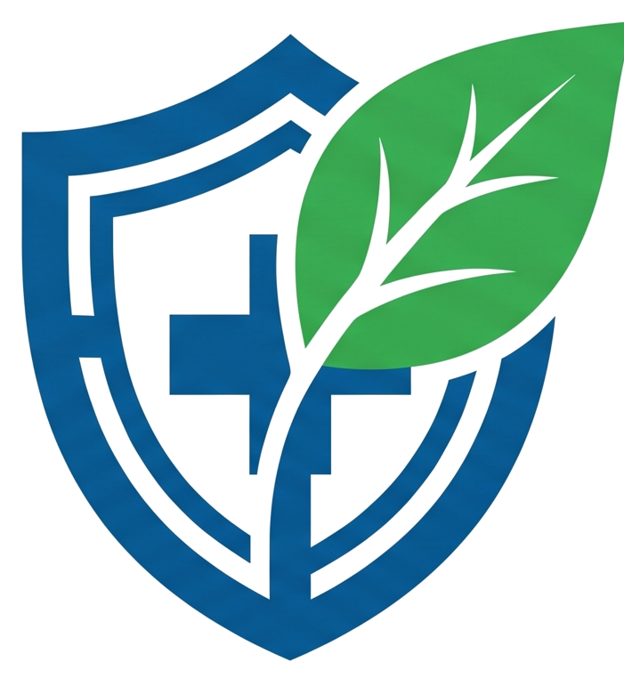
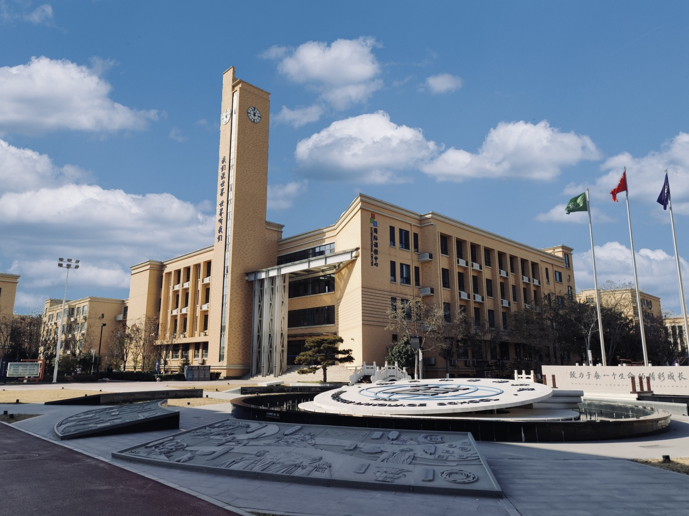
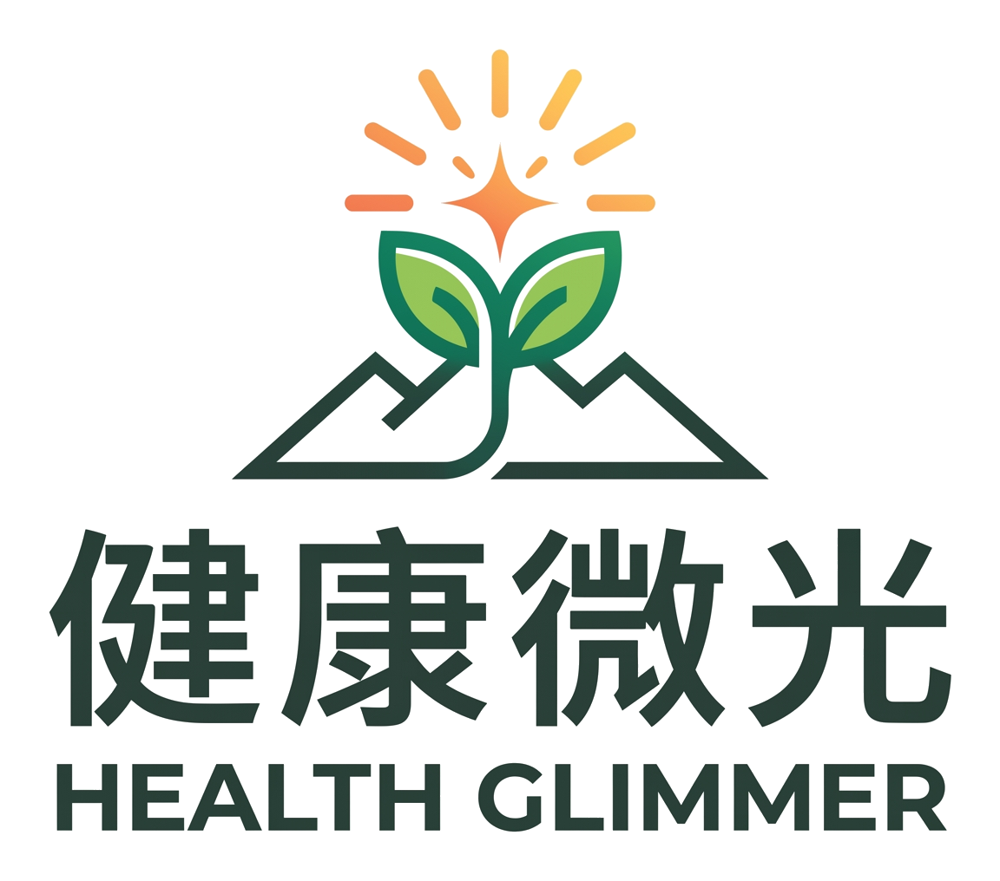
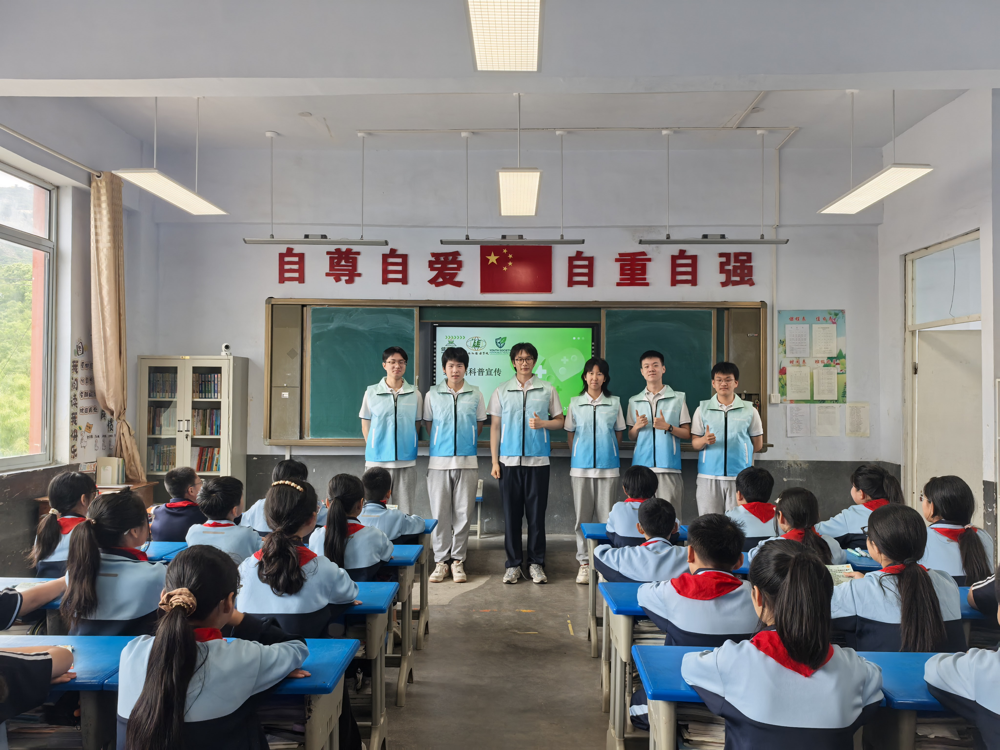
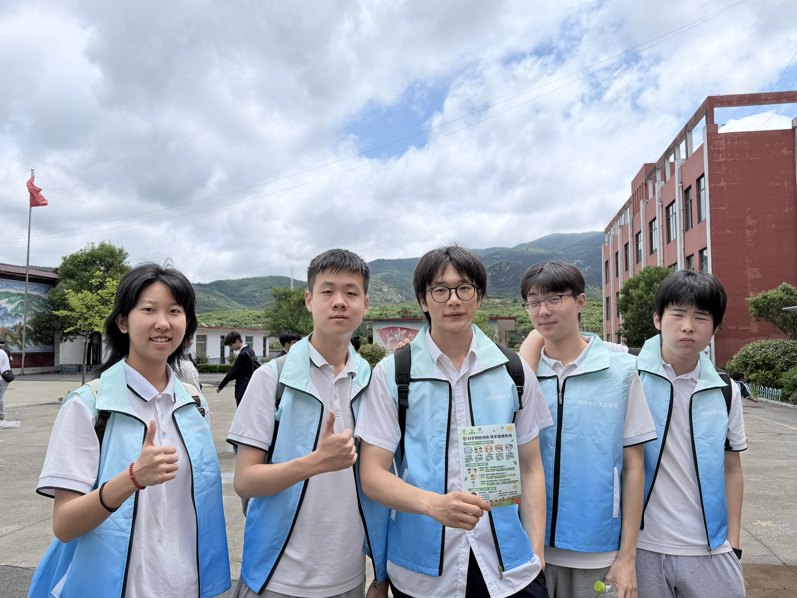
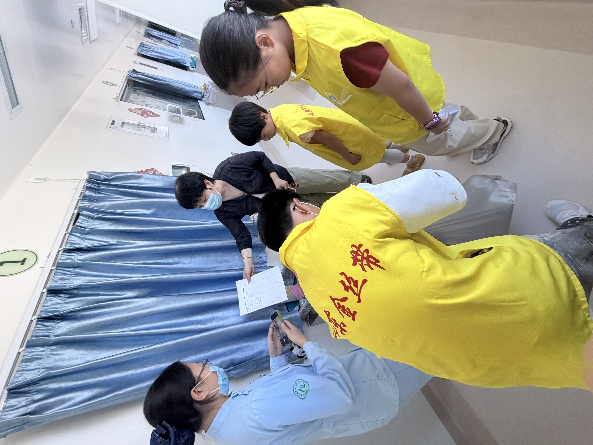

Learn
Reading groups and discussion sessions that build a shared vocabulary for public health.

YSPH-JNFLS
Youth Society for Public Health in JNFLS
A student-led academic society advancing public health literacy, research practice, and community action at Jinan Foreign Language School.
Translate prevention knowledge into clear, practical peer education.
Study health questions through reading, surveys, and field observation.
Connect prevention, health equity, and service in real communities.
YSPH-JNFLS brings together students who care about prevention, health equity, public communication, and practical change. We learn from academic sources, translate knowledge into accessible education, and test ideas through real projects.
Our work connects the classroom with the community: from campus health literacy to rural outreach, from survey design to service programs for people who are often left outside the center of public attention.
Learn about our team and TB Prevention HutReading groups and discussion sessions that build a shared vocabulary for public health.
Student practice in asking concrete health questions, reading evidence, and writing briefs.
Campus and community work that turns prevention knowledge into accessible action.

Signature Project
Public health education for communities beyond the campus.
Health Glimmer is a student-initiated public health outreach project serving people and communities in remote mountainous areas through accessible health education and careful youth-led communication.
The project turns reliable pieces of health knowledge into field-ready materials: hygiene education, disease prevention, first-aid awareness, nutrition conversations, and age-appropriate classroom activities.


Public health education and companionship for remote mountain communities.
Student-led sessions that translate prevention, hygiene, nutrition, and mental health knowledge.
Introductory practice in surveys, data reading, risk communication, and evidence-based writing.
Service activities supporting children and families facing serious illness through organized care.
Our research work is designed for high-school students who want to practice rigorous thinking before publishing or presenting. Each brief asks a concrete health question, explains its evidence, and ends with a practical recommendation.
A reflective report from Health Glimmer on classroom response, communication barriers, and next steps.
A concise evidence summary for peer education and school-based health communication.
An explainer connecting access, prevention, and youth responsibility in community health.

Beyond classroom education, YSPH-JNFLS participates in service projects that help students understand public health as a lived social practice. Charity activities, hospital-facing support, and community campaigns allow members to see how prevention and compassion meet in real settings.
Propose a collaborationField teaching and health literacy activities for students and communities in remote mountainous areas.
Signature ProjectA student-led forum on prevention, evidence-based communication, and public health responsibility.
PlannedVolunteer participation supporting children, families, and public awareness through organized service.
Community ActionWe welcome students interested in public health research, health education, writing, design, event organization, field service, and community partnerships.